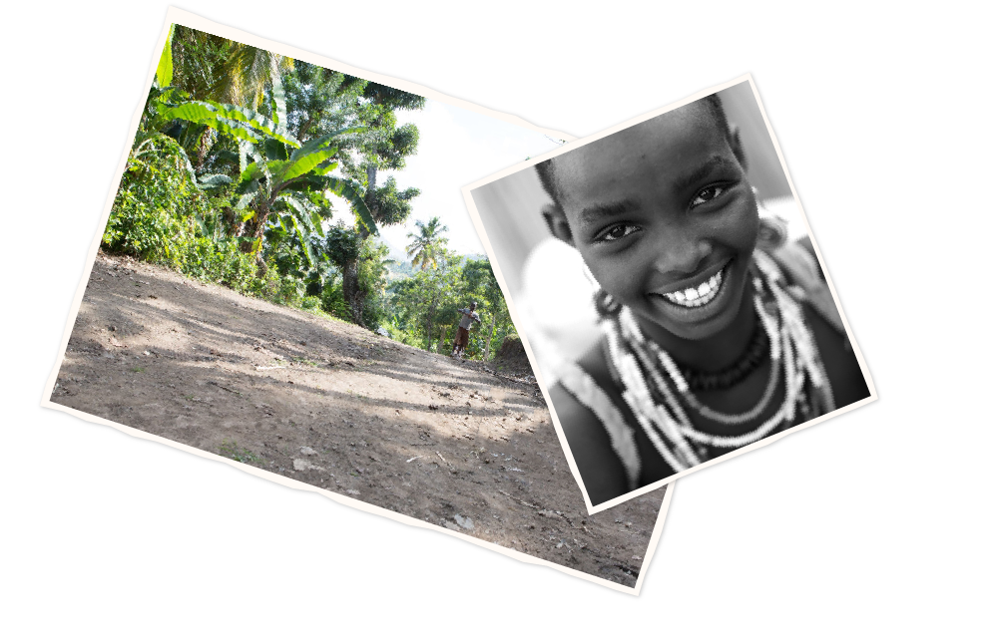
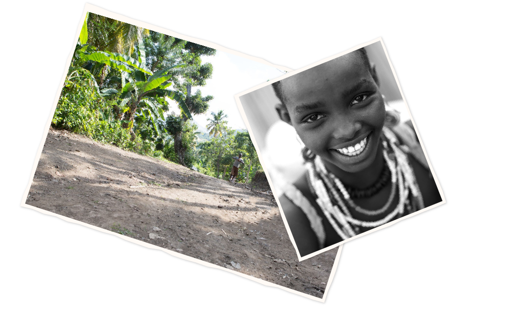

Ayiti Vèt ranfòse rezistans anviwonman pou kominote Ayisyen yo vin pi djanm. Pou fè sa, nou ranfòse kapasite moun ak mwayen kowòdinasyon pou pi byen jere kesyon rebwazman ak resous natirèl yo. Ayiti Vèt itilize yon apwòch entegre, dirab, ki santre sou moun.
Misyon Nou
 

Depi 40 tan Ayisyen kap viv andeyò toujou ap fè fas ak menm defi yo: pwodiksyon agrikòl kap diminye epi sezon kap chanje britsoukou ki rann lavi pi difisil pou kilitvatè yo chak ane. Ayiti Vèt se yon kanpay nasyonal pou sipòte agrikilti ak pwodiksyon lokal, espesyalman nan plante pye bwa ki kapab kreye revni ansanm ak pyebwa ki bay fwi epi pyebwa ki sèvi pou transfòmasyon pou ede kiltivatè yo genyen yon alemye an menm tan pou ede yo adapte avèk yon klima k ap chanje.
Ayiti Vèt se yon apwòch tou nèf sou pwoblèm anviwonman an Ayiti. Objektif li se koupe fache ak seri ti pwojè pasi pala oswa efò endividyèl izole. Apwòch Ayiti Vèt se mete ansanm tout aktè nan sektè a pou pwofite de eksperyans, leson ak bòn pratik yo dekouvri nan zafè pwoteksyon anviwònman, swa nan peyi dAyiti swa lòt kote sou latè. Tou sa nan lide pou pi byen jere resous natirèl peyi dAyiti e pou adapte li parapò ak chanjman klima.

Mizè se mo Ayisyen anplwaye pou pale de povrete e se pi gwo defi sou wout pwoteksyon anviwònman peyi a. Se poutèt sa nan tout jefò kap fèt pou rann anviwònman pi djanm nou dwe konsidere amelyorasyon kondisyon lavi Ayisyen kap viv andeyò yo.